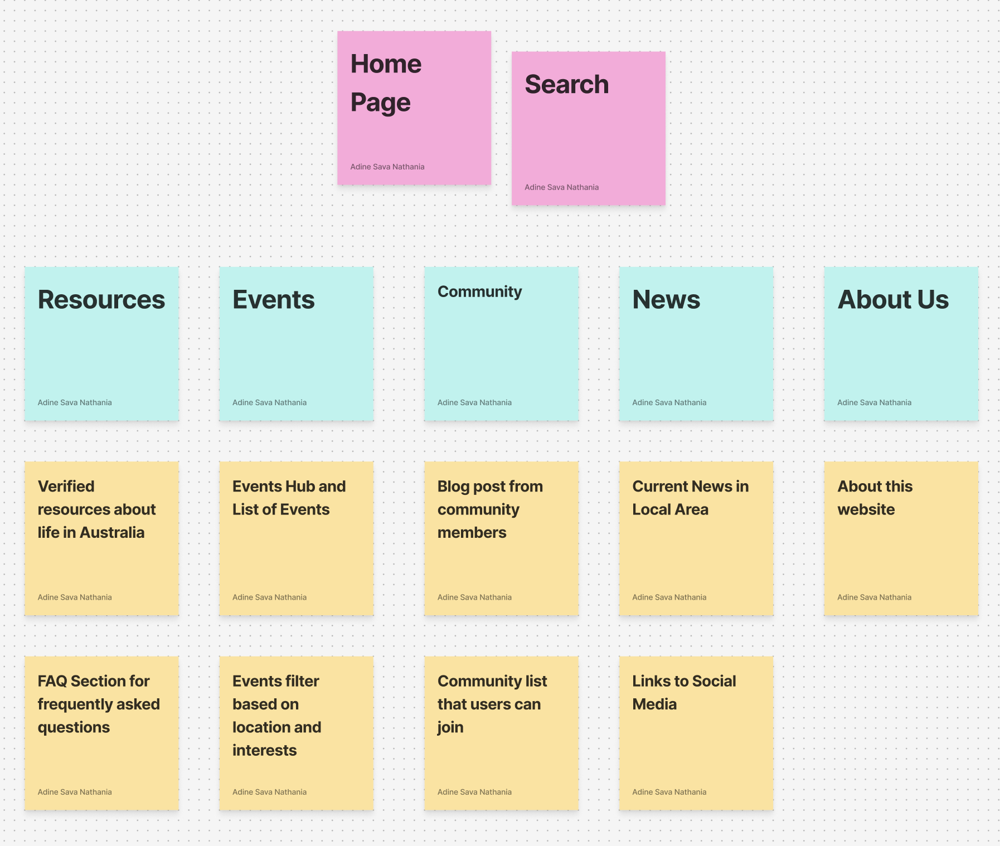

Website Site Map
This is the website created by card sort exercise.
In this exercise, I created a site map based on the card sort results. The goal is to create a user friendly navigation structure.
The accordion shows the website structure. Expand each section to view pages and sub-pages, with notes on user/client needs.
The Resources page is a go-to hub for reliable and practical information to help newcomers settle into life in Australia. Supports the user story of:
- As a new international student arriving, I want clear guides on banking, transport, and healthcare so that I can adapt to daily life in ease
- As a newcomer, I want a step-by-step guide to renting in Australia so that I understand bonds, inspections, and applications, and the procedure to rent housing here.
- As a student living alone for the first time, I want tips on everyday life, such as budgeting, banking and tips on grocery shopping.
- As a first-time renter in Australia, I want access to official housing resources and guides, so that I can spot scams and make informed decisions.
This page brings together trusted and up-to-date resources to help newcomers navigate everyday life in Australia with confidence. Every link and guide here has been carefully reviewed to ensure accuracy, credibility, and relevance.
Information about living and housing, working, studying, healthcare, banking, getting around and culture.
Find quick answers to the most common questions international students, migrants, and community members ask when starting life in Australia.
The Events page is the gateway to discovering what's happening in the community. Explore diverse events, with filtering based on interests and discover growth opportunities. Supports the user story of:
- As a young international undergrad, I want to see student clubs and social groups so that I can get involved in campus life quickly.
- As a PhD student, I want to find activities and communities relevant to postgraduate students and based on my interests.
- As a new student, I want to discover events happening in Brisbane so that I can meet new people and make friends.
The Events Hub is a one-stop space to explore everything happening around, find highlights, featured gatherings, and upcoming events. Filter by date, category, or location to quickly find the activities that matter most.
The community page enables newcomers to discover groups, networks, and communities with same interests, culture, or goals. Supports the user story of:
- As a young international undergrad, I want to see student clubs and social groups so that I can get involved in campus life quickly.
- As a PhD student, I want to find activities and communities relevant to postgraduate students and based on my interests.
The Community Blog is a space where members share their own stories, experiences, and insights about life in Australia. Read real stories and gain practical advice from community members.
Directory of groups, clubs, and networks that users can join. Browse all communities in one place, from cultural associations to student clubs, filter and search by category and interest. See community details such as description and number of members.
The news page keeps user informed and connected with the latest updates, announcements, and stories that matter to international communities in Australia. Supports the user story of:
- As an international student who just arrived in Australia, I want to see important updates about student visas, university services, and scholarships, so that I can stay informed about opportunities and requirements that affect my studies and future.
The Current News in Local Area page keeps users up to date with the latest stories and updates from current city or neighborhood. Reads real-time news, and stay aware for important information.
The About Us page shares the story behind this platform and the people who make it possible. We created this platform to support international communities arriving in Australia, helping them feel welcome, informed, and empowered from the moment they arrive.